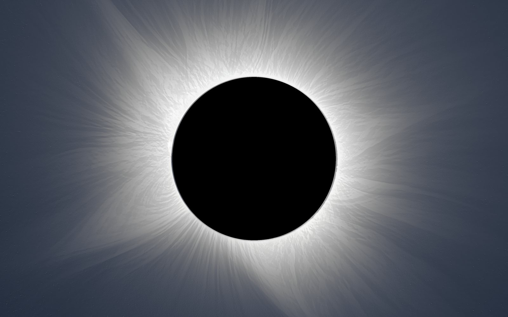
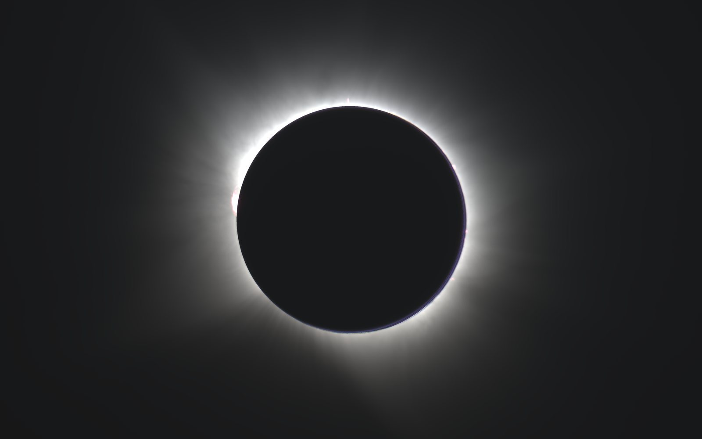
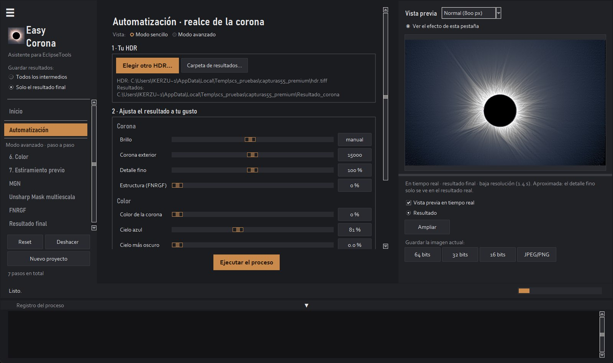

Gratuita
Para probarla con tus fotos.
0 €
- Todas las funciones, para ver el resultado
- Imágenes a 1200 px, con marca de agua
- No guarda ni exporta imágenes
Para fotos de eclipse total
Easy Corona une todas tus exposiciones de la totalidad en un HDR y saca a la luz los filamentos de la corona. Sin capas, sin máscaras y sin Photoshop.
Windows 10 y 11 · 64 bits · en español · versión 1.0
Foto: Iker Zubizarreta
Por qué hace falta
Durante la totalidad la corona es miles de veces más brillante junto a la Luna que en sus serpentinas lejanas. Por eso se dispara en serie, de fracciones de milésima a un segundo.

1 HDRLas cortas guardan el borde de la Luna y las protuberancias; en las largas eso ya sale quemado.
Las largas recogen las serpentinas lejanas, que en las cortas ni aparecen.
Easy Corona las alinea con la Luna, las apila en un HDR de 32 bits y realza el detalle fino de todo el recorrido.
Antes y después
A la izquierda, el HDR tal cual sale del apilado. A la derecha, el mismo HDR después de Easy Corona.

HDR tal cual Con Easy CoronaQué hace
Alinear
Alinea cada exposición aunque el trípode se moviera o la montura no siguiera bien.
Apilar
Combina todas las exposiciones en una imagen con todo el rango de la corona.
Realzar
Filtros multiescala (MGN y WOW) que hacen visibles los filamentos que no se ven en ninguna foto sola.
Color
El azul del cielo durante la totalidad, medido, y la Luna en un gris uniforme.
Cámaras
Canon, Nikon, Sony, Fujifilm, Panasonic, Olympus, Pentax y DNG. También darks, bias y flats.
Vista previa
Cada deslizador se ve al momento, con el mismo cálculo que el resultado final.
Cómo funciona
La app lee la exposición de cada RAW y las agrupa sola.
Alinea, promedia y apila. Si ya tienes un HDR de otro programa, empieza por el paso 3.
Ocho deslizadores en el modo sencillo; todo el control en el modo avanzado. Guarda en TIFF de 16 o 32 bits, PNG o JPEG.

Versiones
La versión gratuita lo hace todo a resolución reducida. Cuando veas tu corona, elige la tuya.
Para probarla con tus fotos.
0 €
Para sacar tu corona en un clic.
19,99 €pago único
La completa
Para quien quiere controlar cada paso.
49,99 €pago único
¿Ya tienes Premium? Pasa a Premium+ pagando solo la diferencia: 30,00 €. En la app: menú Licencia → Mejorar a Premium+.
Mejorar a Premium+Una sola app para las tres versiones: se descarga gratis y, al comprar, se activa con la clave que te llega por correo · licencia para un ordenador · un año de actualizaciones incluido
Requisitos
Una serie de exposiciones de la totalidad, en RAW o TIFF, idealmente con trípode y de 1/4000 s a 1 s. Cuantas más fotos de cada exposición, menos ruido. También sirve un HDR ya hecho en otro programa.
Es el aviso normal para programas nuevos de autores pequeños. Para instalar:
Tras la compra te llega una clave por correo. En la app: menú Licencia → Activar licencia y pega la clave. La comprobación se hace sin internet.
Cada licencia es para un ordenador. Si cambias de ordenador, desinstálala del anterior y actívala en el nuevo.
La app sigue funcionando para siempre con la última versión incluida. Solo las versiones nuevas publicadas después podrán pedir renovar.
No. Todo el procesado ocurre en tu ordenador y la app no envía ningún dato.
Por eso existe la versión gratuita: pruébala antes con tus propias fotos. Las condiciones completas están en el contrato de licencia.